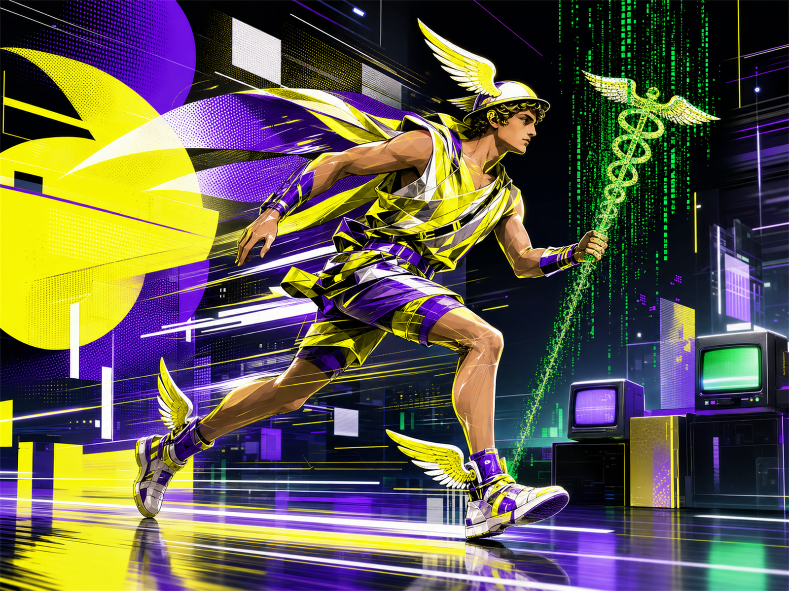

從靈感放電到語言成形 ─ 解碼你思維底層的編譯原理。
9 行星 × 5 相位 × 12 宮 × 12 星座 = 你的大腦韌體版本號。
赫密士（Hermes）是希臘的信使神，腳踩飛行翅膀，手持雙蛇杖（Caduceus）。他能進出冥界與奧林帕斯，做為唯一一個自由穿越邊界的神 ─ 他的工作是把各方的訊息翻譯成另一方聽得懂的語言。
羅馬人叫他墨丘利（Mercury），埃及人叫他托特（Thoth）─ 文字、數字、密碼、煉金術的發明者。三個版本的核心一致：所有讓資訊流動的中介行為，都是水星。
「凡可以用語言表達的，就有可能被翻譯。
凡無法翻譯的，水星教你發明新的語言。」

水星不是「你想什麼」─ 是「你怎麼把想到的，編譯成可以發送的封包」。
它決定你的輸入頻寬（學習）、處理速度（推理）、輸出協議（表達）、儲存格式（記憶）。
每答對一題 Trivia 或解開一道謎題，你會獲得 1 點未分配技能點。把點數投到四大子系統，調出你的人格 build：
[ 未分配點數: 0 ]
水星落入哪一宮，等於你的「思維作業系統」最常被呼叫到哪個生活領域。每點開一宮 +20 XP，解鎖宮位徽章。
同樣是水星，落在不同星座 = 不同的編譯器。同一段邏輯被編譯成牡羊版本和雙魚版本，輸出的產物完全不一樣。每解鎖一星座 +20 XP。
水星與其他行星的角度，是你大腦各模組間的「協議格式」。同樣是水星跟火星溝通，合相是合作開發、四分相是 git 衝突。點開每格 +5 XP，解 45 格收齊配置報告。
※ 受限於水星與太陽 / 金星的最大角距（28° / 76°），部分相位（如水太陽四分）在實際星盤罕見或不存在；本表保留條目以便完整理解相位邏輯，標記為理論值。
12 個星座符號隨機洗牌，找出全部 6 對。完成 +80 XP，解鎖「閃卡達人」徽章。
已配對 0 / 6 ─ 翻牌次數 0
由今日日期 hash 出今日水星密語：
每日 00:00 重新編碼。連續登入 3 天 +50 XP。
連續登入: 1 天
第 9 宮的水星把抽象思考往哲學跑；雙魚的水星做象徵聯想 ─ 把「機器是否會思考」翻譯成「模仿遊戲」這套可驗證的描述，誕生圖靈測試。
獅子戲劇化的講故事＋第 11 宮（社群／集體願景）→ 寫一個世代共同的童年。她的水星在金星附近形成合相，文字自帶討喜旋律。
射手水星愛大格局＋火星合相讓筆鋒銳利＝諷刺文學的祖師爺。第 4 宮把家鄉密西西比河變成寫不完的素材庫。
不為了發表，純粹為了讓內在思緒走完從靈感→語言的全鏈路。21 天後你會發現自己變得可以即興表達。
不需要學整套語言，每週學 1 個句型 + 5 個單字。水星愛「結構」，學新句型直接擴充編譯器指令集。
第一次抓劇情，第二次抓邏輯，第三次抓行文節奏。水星的記憶不靠重複量，靠重複的角度差異。
對象不限。長信強迫你建構連貫的論證結構，比社群短文有用 100 倍。
看到任何金句，用三種版本重寫：給小孩聽 / 給專業人士聽 / 用詩來說。這是水星核心訓練。
水逆是系統 maintenance window ─ 拿來修舊文件、釐清舊對話、重新整理筆記。逆行走完，輸出力會大幅升級。
水星的工作不是讓你「想得對」─ 是讓你的思考可以被翻譯、被傳遞、被別人重新編譯。
把你今天的進度生成一張駭客識別卡，丟到任何地方都自帶賽博龐克濾鏡。
+ 5 XP 已記錄到本地